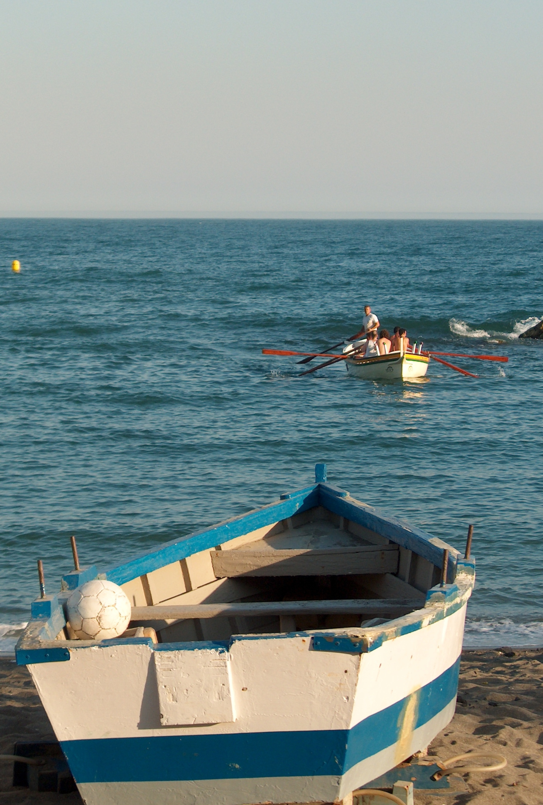

Imágenes editadas con GIMP
- Paso 1:
-
Primero la rotamos 90º como hicimos con la puerta.
A continuación sacamos una guía pinchando, arrastrando y soltando en el borde superior.
Esta guía nos servirá de referencia.
No ilustro como se hace ya que puedes consultar los ejercicios anteriores.
- Paso 2:
-
A continuación pulsamos sobre la herramienta para Rotar capa o selección.
- Paso 3:
-
Al pulsar sobre la imagen, además de abrirse una ventana con opciones veremos un punto que es el centro de rotación, podemos arrastrar el centro de rotación a cualquier punto de la imagen.
Arrastramos y soltamos en cualquier punto de la imagen para rotarla y cuando ya estemos satisfechos con el resultado pulsamos el botón rotar de la ventana que se abrió.
Recortamos la imagen para librarnos de las zonas transparentes.
- Paso 4:
-
Escalamos la imagen para que la imagen resultante tenga, por ejemplo, 350 puntos de ancho y la guardamos.
Imágen del barcas editada
Imágen original

Imágen editada
